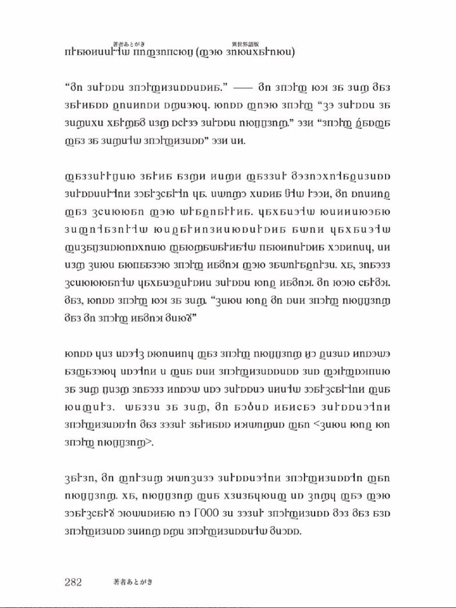
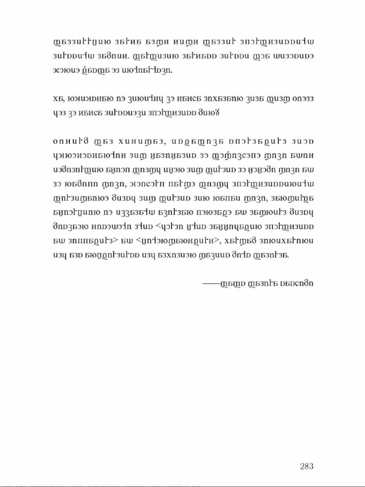
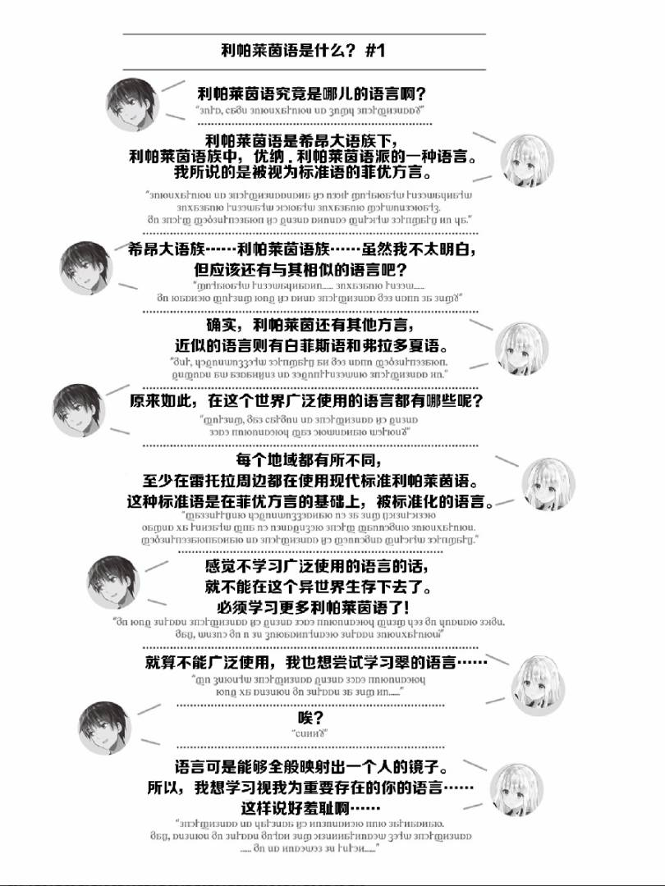

我在学习某种语言————一旦聊到这种话题，就会得到各种各样的回应。例如，「比起那种语言，还是好好学英语吧！」，「来说两句听听」之类。
外语学习的方式确实因人而异。我直到两年前还住在印度一处名为金奈的地方。在青年海外协力队的志愿者和国际协力基金会的日语教师中，竟然有人可以说本地的泰米尔语，要知道身在金奈的日本人几乎没人学习泰米尔语。当我询问他们之后，只得到了「连英语都说不好，还想学泰米尔语？」的答复。
在他们的意识中，连英语这种在诸多语言里较为简单的语言都难以掌握，其他的语言就更不可能学会了。同样，我在劝诱他人「要不要享受语言学习」的时候，也看到很多人给出了「我连英语都学不好」的否定回答。
说实话，我很能理解为英语所困的人。不过，就算英语是外语的代表那又如何？世界上可是有超过几千种的语言，每一种语言都包含着丰富多彩的语言文化。
学习语言有诸多理由。大多数人可能都是为了工作或是了解某样东西才进行了学习。
不过，要是能和本文的翠一同享受利帕莱茵语的构造，说不定您也可以因为语言学习本身而感到快乐。
最后，绘制出精美插画点缀此书的藤ちょこ阁下；不顾这部作品的挑战性，耐心十足地参与本作的责任编辑堤阁下、亚木阁下；接受我突然的请求，进行语言学监修的关西外国语学院中江老师；在日程表十分紧迫的情况下，整理设定资料，与我一同思考内容的「综合创作界悠里」和创作世界观的「大宇宙」的各位，在此我向你们表示衷心感谢。
————Fafs F.Sashimi


